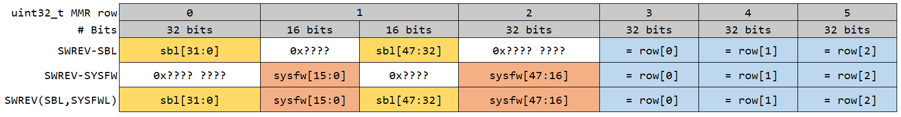

Run time read/write to KEYREV and SWREV¶
Note
This document is only applicable to AM6x, AM65x, J721e, and J7200 High Security (HS) devices.
OTP Revision Structure¶
| OTP Revision Name | Number of bits (with double redundancy) | Format |
|---|---|---|
| Software Revision (SBL + SYSFW) | 192 (96 + 96) | (sbl[31:0] | sysfw[15:0] | sbl[47:31] | sysfw[47:16]) | (sbl[31:0] | sysfw[15:0] | sbl[47:31] | sysfw[47:16]) |
| Software Revision (Board Config) | 128 (64 + 64) | (swrev-brdcfg[31:0] | swrev-brdcfg[63:32]) | (swrev-brdcfg[31:0] | swrev-brdcfg[63:32]) |
| Key Revision | 32 (only LSB 16 (8 + 8) are used) | 0x0000 | keyrev[7:0] | keyrev[7:0] |
Note
Copy in the efuses, helps to reduce the chances of data corruption.
All the revision values are encoded to the following bit pattern, before being programmed into efuses. The integer value (SWREV) translates into the bit position (starting from index 1 instead of 0) of the most significant 1 in its binary representation.
Warning
The decoding of the SWREV (SYSFW, SBL) has to be done from the MMRs by the user. The application is responsible to read these values from the Secure MMRs.
Note
Example: A SWREV value of 3 would translate to the following bit pattern
0b 0000 0000 0000 0000 0000 0000 0000 0111. It could also be represented as
0b 0000 0000 0000 0000 0000 0000 0000 0100. The position of the most
significant 1 is the SWREV value.
SWREV SBL, SYSFW Decode Logic¶
SWREV SBL and SWREV SYSFW are clubbed together, and programmed into efuses.
Reading from Secure MMRs would result in an array of uint32_t, of size 6.
Following logic can be used to decode the SWREV values from MMRs.
/* Leverage Double Redundancy */
row[0] |= row[3];
row[1] |= row[4];
row[2] |= row[5];
if( row[1] & 0xFFFF == 0) {
swrev_sbl = 32 - __clz(row[0]);
}else {
swrev_sbl = 32 + 32 - __clz(row[1] & 0xFFFF);
}
if( row[2] == 0 ) {
swrev_sysfw = 16 - __clz(row[1] & 0xFFFF0000);
}else {
swrev_sysfw = 16 + 32 - __clz(row[2]);
}
__clz is a function to count leading zeros. It is a compiler intrinsic
function, but the following code snippet also gives the same result
uint32_t count_leading_zeros(uint32_t x) {
uint32_t bit_count = 0, lz = 0;
bit_count = sizeof(x)*8;
/* Left shift until Most significant bit doesn become 1 */
while( (x & (1 << (bit_count - 1))) != 0) {
x <<= 1;
lz++;
}
return lz;
}
Dual Signed Certificate for writing KEYREV¶
The message structure for tisci_msg_set_keyrev_req
requires the keyrev value to be programmed, as well the address where the
Dual signed certificate is stored. This is will be used by the System Firmware to
verify against SMPK Public Key Hash, and BMPK Public Key Hash in the device
efuses.
After verification of these key hashes, keyrev will be programmed.
Warning
KEYREV by default is set to 1. Maximum supported value is 2.
Following is the template for Primary Certificate (SMPK private key to be used for signing this)
[ req ]
distinguished_name = req_distinguished_name
x509_extensions = v3_ca
prompt = no
dirstring_type = nobmp
[ req_distinguished_name ]
C = US
ST = SC
L = Dallas
O = Texas Instruments., Inc.
OU = PBU
CN = Albert
emailAddress = Albert@ti.com
[ v3_ca ]
basicConstraints = CA:true
Following is the template for Secondary Certificate (BMPK private key to be used for signing this)
[ req ]
distinguished_name = req_distinguished_name
x509_extensions = v3_ca
prompt = no
dirstring_type = nobmp
[ req_distinguished_name ]
C = US
ST = SC
L = Dallas
O = Texas Instruments., Inc.
OU = PBU
CN = Albert
emailAddress = Albert@ti.com
[ v3_ca ]
basicConstraints = CA:true
1.3.6.1.4.1.294.1.34=ASN1:SEQUENCE:image_integrity
[ image_integrity ]
shaType = OID:2.16.840.1.101.3.4.2.3
shaValue = FORMAT:HEX,OCT:TEST_IMAGE_SHA512
imageSize = INTEGER:TEST_IMAGE_SIZE
Replace TEST_IMAGE_SHA512 and TEST_IMAGE_SIZE with the SHA512 hash
and size in bytes of the Primary Ceritificate. Concatenate Secondary certificate
and Primary Certificate to form the Final Certificate, whose address in memory
would be populated in the tisci_msg_set_keyrev_req
message